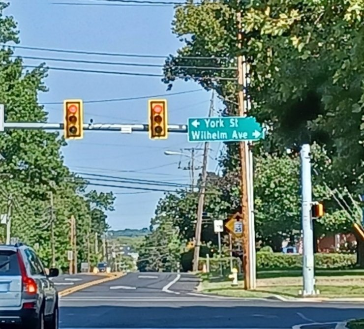
Although they wait for improvement at the Quentin Road/Isabel Drive intersection, Lebanon area motorists are finding relief thanks to the improved intersection on Cornwall Road and Wilhelm Avenue with the new turn lanes and traffic signals.
Sitting at the new light, this author's mental motor idled with the thought: what's behind the "Wilhelm" name of that angular avenue that has since been realigned with York Street?
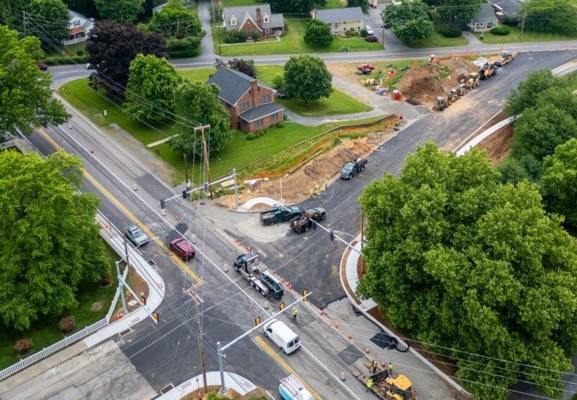
Certainly it must be the noted 19th century manager of Coleman affairs, Artemas Wilhelm, yes? And how appropriate an intersection, as Wilhelm came from York.
Read on…
Who is this man?
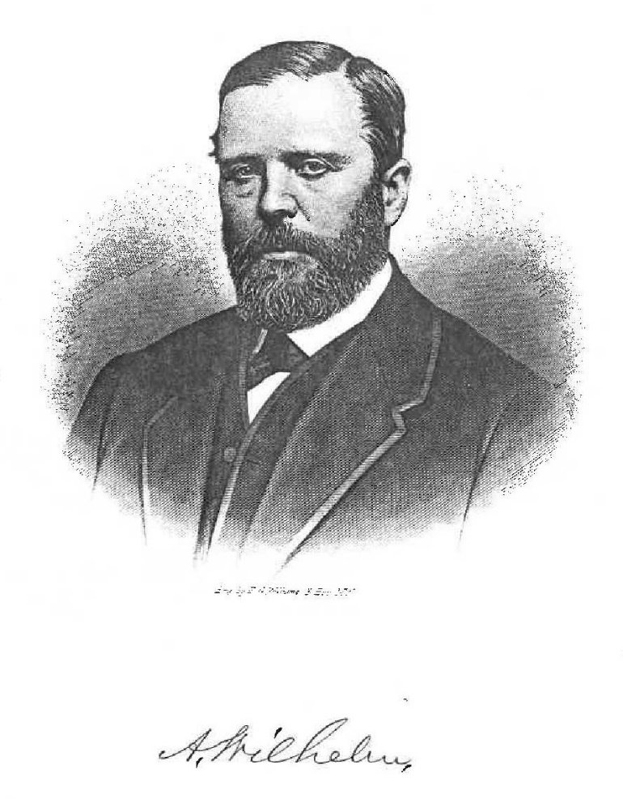
Artemas Wilhelm has appeared multiple times in the "Who Knew?" series as the competent advisor who tried to keep Robert H. Coleman, "Florida Man," on track. He was far more than that; his achievements beginning much earlier. For all he accomplished in Lebanon county, he deserves to be memorialized by more than a road sign.
Wilhelm was born in Baltimore County, Maryland in 1822 to Sarah and John S. Wilhelm, of German descent. Six years later the family moved a few miles north (along the region of Interstate 83) to Shrewsbury, Pennsylvania. The family had a presence in York for many decades afterwards.
Artemas (as spelled on his grave monument, but also spelled Artemus and Artimus in various records) was privately educated by his parents. At sixteen he was employed on the Northern Central Railway being built between Baltimore and York.
At age 18 he apprenticed as a stone mason in Shrewsbury. Within five years he was assisting his father in constructing iron furnace no. 1 for the Ashland Iron Company in Maryland. According to Prowell's "History of York County (1907)," the Wilhelms were the builders of the first hot blast anthracite furnaces in America; the father having gone abroad to learn the technology of furnace construction. The Ashland works became the third largest producer of pig iron in the country, growing to 50 tons per day in the 1850s (our historic but antiquated Cornwall cold-blast charcoal furnace was producing about 3 tons per day). After his father's death in 1847, Wilhelm was retained to build furnace no. 2 at Ashland.
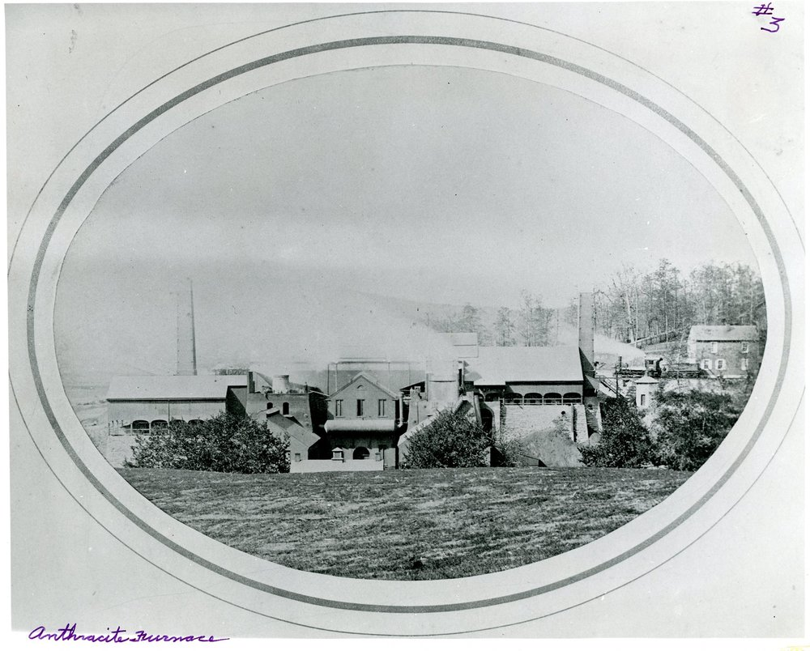
His successes drew the attention of Cornwall's R. W. Coleman, who engaged Wilhelm in 1849 to build the Anthracite furnace in Cornwall, and a second one in 1853. He returned to Ashland until 1855, when once again he was retained by R. W. Coleman as superintendent and assistant of his various industries in Lebanon county including the Anthracite Furnaces. Both were young, yet accomplished 33-year old men.
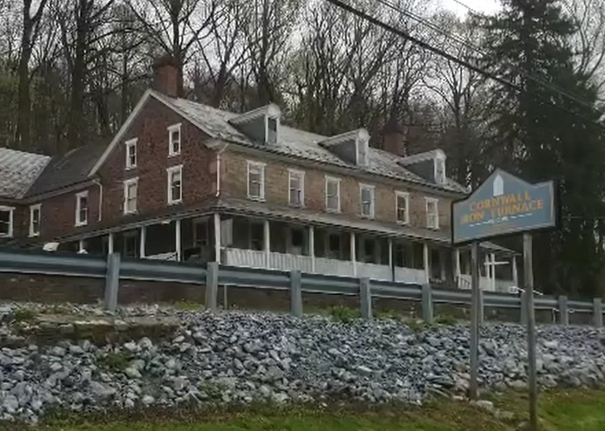
R. W. Coleman died in 1864, leaving Wilhelm as the indispensable manager of affairs for the "Heirs of R. W. Coleman" business. Earlier in 1856 the family business had become insolvent. The Coleman estate had been refused loans and sought Wilhelm's capable hands to steer them back to prosperity. Wilhelm reluctantly agreed; he had no assets of his own but the banks loaned him money merely on the strength of his reputation.
In 1857 he purchased the Dudley, in 1873 remodeled it, calling the Donaghmore furnace. In 1870 he built the North Cornwall furnace, later the Bird Coleman furnaces, and in 1880 the Colebrook furnaces. For all of these he made the designs and drawings. He was also the inventor of several important improvements in blast furnaces.
In 1864 he was prominent in designing and completing the unique spiral railroad east of the Cornwall Iron Furnace, that climbed Cornwall's "Big Hill," for the mining of iron ore.
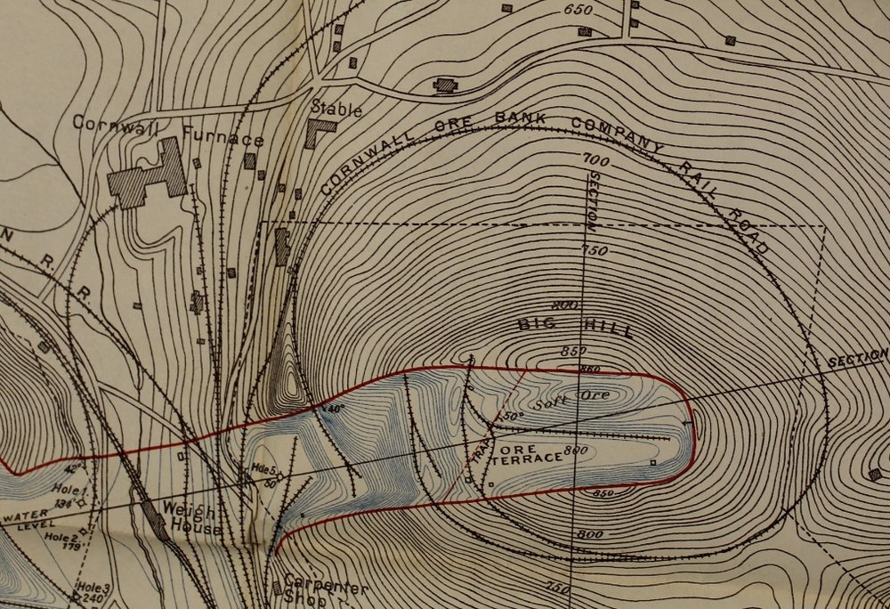
In October 1873 Wilhelm made difficult decisions to take furnaces "out of blast" (shut down) given the dire economic conditions.
Late October 1876 he enjoyed the perks of his association with the Coleman family, going to their Speedwell Stockfarm to enjoy some time off, hunting with his setter. A month later newspapers reported him entertaining Governor (General) Hartranft and four other dignitaries who visited him in Cornwall and taking them to Speedwell to inspect the fine horses, "some of the finest equine blood in the country."
In the winter of 1877 Wilhelm donated 500 tons of coal on behalf of the Colemans to the benevolent Howard Association, to be distributed to the poor of Lebanon. The following month when a blizzard snowed-in the Cornwall turnpike "as high as the fences," he organized 40 workers from the estate to clear a good portion of the road.
In 1877 young Robert H. Coleman had achieved his majority and began taking the reins. Mr. Wilhelm steered Robert into several director roles in the Cornwall and Lebanon business while continuing in the position of manager. Robert retained him to supervise renovations to their Cornwall Cottage and the construction of Robert's first bridal mansion. In 1882 for reasons of health and at times in conflict with Robert, he stepped down.
His involvement in the smallest details is evidenced by one letter to R. W. Coleman regarding the spiral staircase for the Freeman (now Buckingham) mansion's tower: "Col. Freeman is here and desires to know what arrangement of stairway you design for ascending to the top story of this tower. I have suggested a spiral stairway of cast iron which could be made somewhat ornamental." A subsequent discussion expressed concern regarding iron because it would be open, with ladies ascending the stairs. They decided on an elegant wooden spiral staircase.
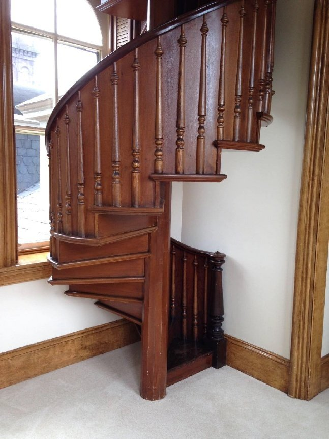
The Colemans were ever grateful for his years of service, having expanded their land holdings and multiplied their wealth under his careful eye. In 1877 Robert presented him a financial gift of $5,000 in recognition of his dedication to the family. Sue Ellen gave him an additional $2,000 near Christmastime. But that was simply established tradition; when Wilhelm began working for the R. W. Coleman in the 1850s for $600 a year, the grateful Coleman had been giving him $1,000 Christmas gifts yearly.
In summary, Artemas Wilhelm was the brains behind all of the Coleman furnaces in Cornwall. In addition he supervised the construction and improvement of their mansions, whether Coleman, Freeman or Alden (see the story of Millwood, the Alden Villa).
Successful In His Own Right
In addition to all that he did for the Colemans, Artemas Wilhelm conducted greater affairs of his own. According to Henry Grittinger's history, a charter for the Aurora Iron company was granted Artemas Wilhelm of Cornwall, D. S. Hammond, A. R. Boughter, William Shirk and P. L. Weimer of Lebanon in 1865 (all of these became masters of various Lebanon industries; for more, see Grittinger's 1904 report to the Lebanon County Historical Society).
They erected a plant east of Fourth street, Lebanon, for the purpose of manufacturing butt-weld wrought iron pipe. The company was unsuccessful and in 1882 re-organized as the Lebanon Iron company. Robert H. Coleman was president; A. Hess, secretary and treasurer; Thomas Evans, general superintendent; A. Wilhelm and D. S. Hammond, directors. The plant was enlarged and converted into a bar iron rolling mill. In July 1889, the company merged with other companies into the American Iron & Steel company.
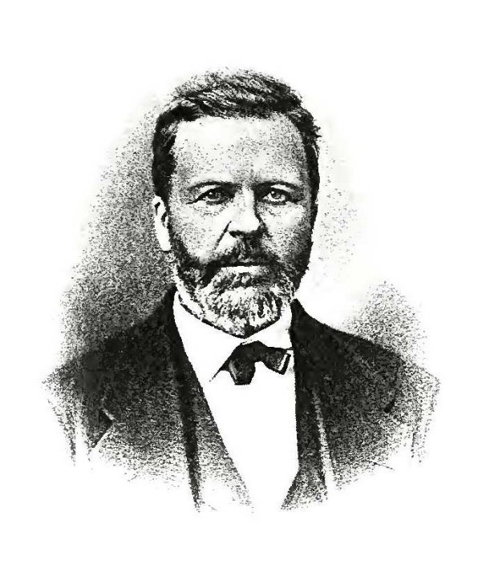
Other brief mentions:
- 1860 — The Federal census lists him as "Manager," net worth $11,000.
- 1861 — He purchased the Cornwall Road turnpike, a worn-out plank road from years of hauling pig iron to the Union Canal, turning it into the "best macadam road in the country."
- 1863 — His Civil War service registration listed him as age 40, resident of Cornwall, occupation "Manager."
- 1865 — He was appointed postmaster of Cornwall on 5 January, succeeding his friend the late R. W. Coleman who had held the position since 1848 (d. 1864).
- 1870 — Federal census: "Supt. Iron Works," net worth $45,000 (growing but still a pittance compared to the Colemans' millions).
- 1873 — Wilhelm was elected president of the Lebanon Rolling Mill.
- 1880 — Federal census: "Manager of Coleman Estate" (net worth not recorded).
Furthermore, he was described as "a large stockholder in many of the leading corporations of the State, one of the directors of the Commonwealth Trust and Safety Deposit Company, a member of the Central Iron Works of Harrisburg, and identified with telephone and electric light interests."
“Red Tape”
The account found in "The Biographical Album of Prominent Pennsylvanians (1890)" includes this insight to the character and discipline that undergirded Wilhelm's successes. Whether to his back or to his face, in Cornwall he earned the nickname "Red Tape," because he was so insistent on having proper records, vouchers and invoices for every detail of work that he oversaw.
Artemas Wilhelm, Agriculturalist
We have painted his portrait as "industrialist," but that would be incomplete. By the end of his career Wilhelm had been President of the State Agricultural Society, in addition to his directorships in many corporations. His obituary described him both as "widely known iron founder and agriculturalist."
To the point of the beginning of our story, Wilhelm acquired a 105-acre farm a mile south of Lebanon, located on what is now known as Wilhelm Avenue, a road known until recently as a convenient, if not sometimes difficult, connector between points A and B.
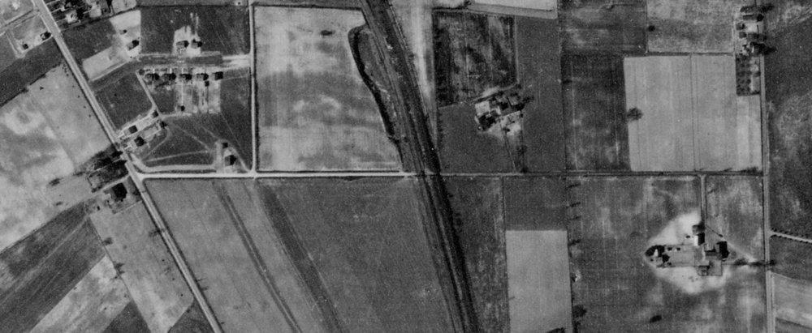
The farm lay along the 6-mile North Lebanon Railroad, built in 1855 by his colleagues William Coleman and G. Dawson Coleman. They acquired lands the railroad traversed and sold a plot to Wilhelm in gratitude for his services to the Coleman family.
Wilhelm Avenue began as a straight road connecting the Cornwall turnpike on west to what is now Lincoln Avenue on the east.
That would not be his only farming venture. Out west in Dauphin county, in 1873 he purchased the Doughtery farm in Paxtang. According to an old Harrisburg newspaper account, it "developed it into one of the finest farms and residences in the Lebanon Valley." He named it "Sunrise."
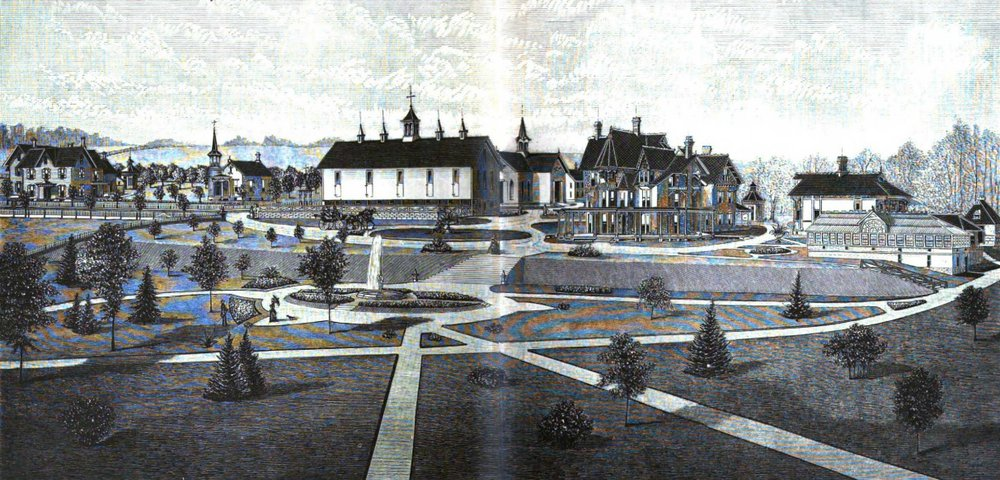
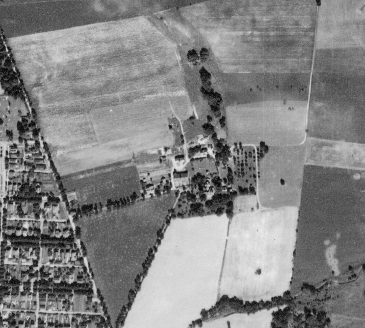
Wilhelm's Family
Artemas married Elizabeth Boring Schall, daughter of John Schall of York ("Schall" a German name for "town crier"). They raised a family of four children, all apparently born in Cornwall. A map shows a house on Cornwall Road immediately across from the gates of Sue Ellen Coleman's great estate, in the area now known as Toytown.
Their first children were born the same years as William and Sue Ellen Coleman's children Robert H. and Anne Caroline and are mentioned in Anne's letters.
David Hammond Wilhelm (1857–1866) was first, dying young at 9 years of age. He was likely named for D. S. Hammond, one of Wilhelm's business colleagues.
J. (John) Schall Wilhelm (1858–1896) served as a clerk at Cornwall furnace in 1880, after attending Lafayette College in Easton, Pennsylvania with one of the Coleman cousins, Edward C. Freeman. He was expelled temporarily in 1876 for gambling, losing his money and not paying his college bills. He was known to "carouse" around Lebanon as well, causing his father considerable grief. More about him in a moment.
Daughters Isabel Schall (1865–1933) and Sarah Hand Coleman Wilhelm (1870–1915) rounded out the family. Sarah's name clearly honors two prominent women of the Coleman family. Sarah the elder Coleman had been engaged to Rev. Augustus Muhlenberg but died tragically. Her niece, the younger Sarah was unmarried, living at the Freeman/Buckingham estates in Washington D.C. and Cornwall. She erected the greenhouse that still stands at Cornwall Manor.
Curiously, the 1880 census lists a fifth Wilhelm child, Robert, age 14 "attending school." He did not appear in the 1870 census and no other mention of him has been found.
Artemas Wilhelm died September 20, 1887, having retired a few years earlier to his pleasant estate "Sunrise" in Paxtang. His wife Elizabeth remained until her death in 1901. Both are buried at Prospect Hill Cemetery in York.
About that Farm on Lebanon's Wilhelm Avenue
On Wilhelm's death in 1887 his Lebanon farm passed to his surviving son, J. Schall Wilhelm, who had a remarkable career of his own after his turbulent college days.
He may have served simply as owner of the 105-acre property on Wilhelm Avenue. Newspaper accounts refer to the Eisenhauer family as tenants. J. Schall Wilhelm also owned a 200-acre hog farm in Paxtang, part of his father's "Sunrise" estate.
He is also credited as being active in manufacturing "up state," with an interest in politics.
A news story dated August 18, 1890 reported that the younger Wilhelm would be the Republican candidate for Congress in the York district. The next day an article appeared in which he declined the nomination due to poor health. A week later a third story appeared in which the York Republican party was adamant that he was electable and would be nominated as the candidate; but Wilhelm stood firm, deferring to his health concerns.
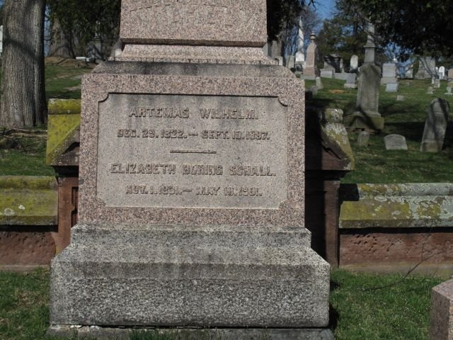
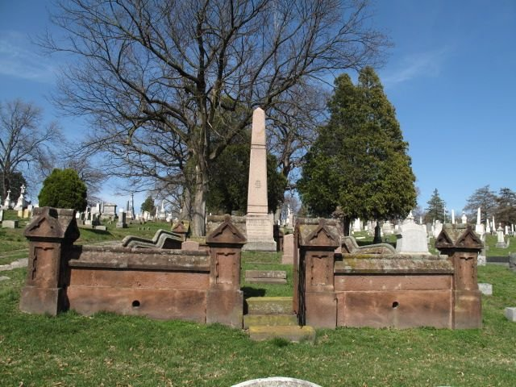
J. Schall Wilhelm began seeing to his affairs. His various properties went up for sale in September 1894. He sold the 105-acre Lebanon farm on Wilhelm Avenue to C. W. Lynch in 1895.
The younger Wilhelm died at age 37 in 1896 and was buried with the rest of the Wilhelms in the family plot at Prospect Hill Cemetery in York.
Conclusion: Who was the genuine “Iron Master” of Lebanon?
In the final five years of Wilhelm's career, imagine his thoughts upon seeing his young protege "Bob" Coleman receiving a vast inheritance and coming into his own.
Wilhelm had been the true steward, in the biblical sense, of his masters' estates. He had rescued, preserved, even multiplied the wealth of the previous generation, R.W. and William Coleman. They being deceased left Artemas, like an Uncle wanting the best for Robert and Anne. Knowing Robert to be headstrong, Wilhelm had every reason to worry, yet expressing encouragement and trust to the next generation.
His time was done. He sought retirement, aware of his own declining health. He realized what everyone eventually comes to understand in old age; he had run the course, fought the good fight, and must now trust that the next generation will rise to the task.
Originally published on LebTown, September 10, 2024.